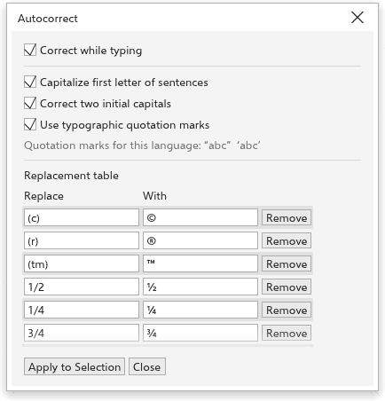
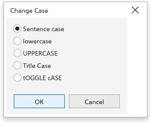

Questa pagina non è ancora tradotta ed è mostrata in inglese.
Writing tools
TraceDraw checks spelling and grammar, finds synonyms, corrects as you type, and fixes text that came in with the wrong characters. The commands are in Text > Writing Tools and the Text menu.
The Writing Tools dialog box
Text > Writing Tools > Spell Check, Grammar and Thesaurus open the Writing Tools dialog box at that tab. Check chooses whether to check every text of the page (Document) or only the selected texts (Selection).

Spell Checker
- Click Start. The first word not found shows, with suggestions under Replacements.
- Click a suggestion to put it in Replace with (double-click to replace at once), or type the right word.
- Click Replace for this place, Auto Replace for every place, Skip Once or Skip All to leave it, or Add to add the word to your own word list.
- Undo takes back the last replacement.
Options has Ignore words with numbers and Ignore words in capitals. TraceDraw uses the dictionaries installed on your system; without one, only a built-in word list is used.
Grammar
The grammar checker finds doubled words, double spaces, spaces before punctuation, missing spaces after it, sentences that start in lower case, unbalanced brackets and quotes, repeated punctuation, sentences over 40 words, missing end marks and, in English, "a" and "an" before the wrong sound. For each finding it shows the replacement, the New sentence and the Rule Name. Click Start (then Replace), Skip Once or Skip Rule.
Thesaurus
Type a word (the first word of the selected text at first) and click Look Up. The meanings show with their synonyms: click one to pick it, double-click to look it up. Insert puts it in the text, keeping the capitals. Under Options, Close after inserting closes the dialog box after inserting, and Choose Thesaurus File uses a thesaurus file you have.
Autocorrect
Text > Writing Tools > Autocorrect sets what is corrected while you type:
- Correct while typing;
- Capitalize first letter of sentences;
- Correct two initial capitals ("THe" becomes "The");
- Use typographic quotation marks, in the style of your interface language;
- the Replacement table:
(c)becomes ©,(r)®,(tm)™,1/2½ and so on. Add and Remove change the rows.
Apply to Selection applies the rules to the selected text. Text you paste or import is never changed.

Custom hyphens
Text > Custom Optional Hyphens (also the gear of the Paragraph section of the Text panel) defines where your own words may break, such as product names. Those words break only there when hyphenation is on.
- Choose the Language (Show all languages lists every one).
- Type the Word and the Hyphenated Word with hyphens where it may break, such as
Trace-Draw. - Click Add Definition. Remove Definition removes the selected definition.
- Under Automatically insert custom optional hyphens, When typing and When pasting and importing text turn hyphenation on for texts that hold a defined word.
- Click Apply to Selection to apply them to the selected text now, or OK to keep them.

Change case
Text > Change Case changes the selected text to Sentence case, lowercase, UPPERCASE, Title Case or tOGGLE cASE.

Text statistics
Text > Text Statistics counts the text objects, lines, words, characters and fonts of the selected text, or of the page.

Encode
Text that came from another program sometimes shows the wrong characters, such as "café" instead of "café". Text > Encode fixes it:
- Select the text.
- Choose how the text Text was read as and what It really is (UTF-8, Windows-1252, ISO-8859-1, Mac OS Roman or Windows-1251).
- Check the Preview and click OK.

Web-compatible text
Text > Make Text Web-compatible simplifies the selected text for web pages: gradient, pattern, texture and mesh fills become a flat color, and outlines, shadows and effects are removed.